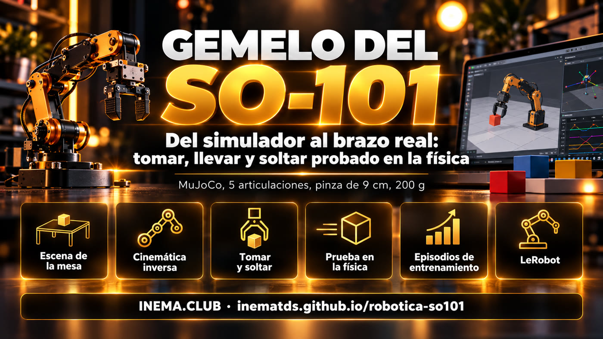

El brazo que irá a la mesa ya entrena en el simulador
Gemelo de simulación del SO-101: toma, lleva y suelta objetos livianos en la física, genera datos de entrenamiento y prueba el plan antes de encender un motor.
Es una copia virtual (un "gemelo") del brazo robótico SO-101, el kit económico de 5 articulaciones que se usa con LeRobot, funcionando en el simulador de física MuJoCo. Sirve para quien va a armar el brazo y quiere probar antes: el gemelo toma un cubo, una pelota de tenis y un frasquito y los pone en una bandeja, graba los movimientos como datos de entrenamiento y muestra si un plan funciona. Solo necesita una computadora con Linux y Python; el brazo real entra en las fases siguientes.
Qué es
Un proyecto por robot: este es el del SO-101
Continúa el robotica-real2sim, que hizo lo mismo con un brazo industrial Franka Panda. El SO-101 alcanza la mitad y carga 15 veces menos, así que casi todo cambió: cinemática, pinza, mesa y objetos.

🦾 El brazo correcto
Modelo oficial del SO-101 (MuJoCo Menagerie): 5 articulaciones en el brazo, pinza con un dedo fijo y uno que gira, servos con fuerza máxima de 2,94 N·m.
🦾 Toma y suelta de verdad
Un cubo de 3 cm, una pelota de tenis y un frasquito de 4 cm van a la bandeja en la física: 50 de 50 episodios para cada uno.
🦾 Prueba antes del motor
Cada plan se ejecuta decenas de veces con variaciones de posición y de tamaño. Nada va al brazo real sin pasar la prueba del peor caso.
Cómo funciona
De la mesa descrita al dato de entrenamiento
La mesa se convierte en un archivo cena.json (escrito a mano o sacado de una foto por un modelo de visión). De ahí en adelante todo corre en local, sin API.
cena.json→escena MuJoCo con el SO-101→generador de movimiento→prueba con variaciones→episodios + anotación→dataset LeRobot
1
Cinemática de 5 articulaciones
Manda la posición de la punta; la pinza queda recta hacia abajo cuando se puede y se inclina sola cuando el brazo no alcanza. El giro de la muñeca elige de qué lado cierra la pinza.
2
Pinza asimétrica
El objeto se toma apoyado en el dedo fijo; la pelota se toma un poco por debajo del centro, si no el dedo móvil la empuja hacia abajo y se resbala.
3
Trayectoria con desvío
El objeto cargado pasa solo 1,5 cm por encima del borde de la bandeja y rodea lo que hay en la mesa: pasar por encima de una pelota de tenis ya queda fuera de alcance.
Requisitos previos
Qué se necesita para ejecutarlo
Probado en Linux con Python 3.12. No necesita tarjeta de video dedicada: las imágenes salen por EGL.
Python 3.10+ y git
El instalador crea el entorno virtual y descarga el modelo del SO-101.
git clone https://github.com/inematds/robotica-so101
cd robotica-so101 && ./instalar.sh
ffmpeg (para video)
Solo para el comando filmar.
sudo apt install ffmpeg
LeRobot (opcional)
Solo para exportar los episodios como dataset de LeRobot.
./instalar.sh --lerobot
Guía de uso · paso a paso
De cero a los datos de entrenamiento
Todos los comandos de abajo se ejecutan en la carpeta del proyecto. Usa siempre MUJOCO_GL=egl si no hay pantalla (el r2s.py ya lo hace).
1
Instalar y probar
Las pruebas verifican la escena, el alcance de la pinza, los planes y los episodios.
./instalar.shpython3 testes/rodar.py # 14 casos -> TUDO OK
2
Ver la mesa
La escena de ejemplo tiene un cubo, una pelota de tenis, un frasquito y una bandeja, a entre 15 y 30 cm de la base. Cámaras: geral, cima, frente y pulso.
./r2s.py ver exemplos/mesa-so101/cena.json mesa.png --camera geral
3
Filmar el brazo trabajando
Un video con la tarea de la escena (tomar el cubo y ponerlo en la bandeja), con tres cámaras lado a lado.
El plan es una lista de pasos pegar → destino. La prueba se ejecuta N veces, cada vez con la mesa un poco distinta, y dice qué paso falla y por qué. Los lugares en la bandeja se calculan según el tamaño de cada objeto.
Cada episodio sortea posición, giro y masa de los objetos, graba articulaciones y comandos a 50 Hz y una anotación en 4 niveles (objetivo, subtarea, primitiva, eventos). Con --imagens, graba también las cámaras cima y pulso.
Un modelo de visión por suscripción (Codex o Claude) lee la foto de la mesa y devuelve los objetos en centímetros; el script lleva todo al alcance del SO-101 y avisa lo que excede la pinza (9 cm) o la carga (200 g).
./r2s.py foto foto.jpg cena.json --motor codex
Resultados
Lo que el gemelo ya hace (15/10/2026)
Números medidos en la escena exemplos/mesa-so101, semilla 0. El video tiene subtítulos en portugués.
Tomando el cubo: la muñeca gira para que la pinza cierre sobre una cara del cubo.Fin del plan: los tres objetos en lugares distintos, cada uno del tamaño del objeto.
Prueba
Resultado
Cubo de 3 cm hasta la bandeja
50/50 episodios
Pelota de tenis (6,7 cm, 58 g)
50/50 episodios
Frasquito de 4 cm
50/50 episodios
Los tres en la misma bandeja, medida correcta
18/20
Los tres, tamaño erróneo en ±15%
18/20
Los tres, peor caso (bandeja 15% más chica)
6/20: los tres casi no caben
Cubo + frasquito sin lugares × con lugares
0/6 × 6/6
Alcance medido en el modelo: con la pinza recta hacia abajo, el SO-101 llega de 15 a 30 cm de la base, hasta unos 8 cm de altura. Más cerca, más lejos o más alto, la pinza tiene que inclinarse. El fabricante indica 40 cm de alcance; el modelo da 46,8 cm con el brazo extendido.
Límites
Lo que todavía no existe
Para no prometer lo que el proyecto no hace.
Solo simulación
El brazo real todavía no se encendió. El driver de los servos Hiwonder HX en LeRobot aún no está confirmado.
Lata acostada
Acostar una lata alta en una bandeja baja existe en el proyecto del Panda, pero no se portó al SO-101.
Posición perfecta
En el simulador, el generador sabe dónde está cada objeto. En el mundo real, esa posición vendrá de la cámara (Fase 4).
Hoja de ruta
Del gemelo al brazo real
Cada fase tiene un criterio del tipo "comando → salida esperada" en docs/PLANO.md (en portugués).
Fase 0 ✓
Gemelo del SO-101 en el simuladorTerminada el 15/10/2026: pruebas TUDO OK y 50/50 episodios.
Fase 1
Mesa real medida con cinta métricaMedir y fotografiar la mesa y comparar el error de cada modelo de visión, sin encender motores.
Fase 2
Armar, encender y calibrarFuentes correctas (líder 5 V, seguidor 12 V), driver de los servos, teleoperación con el brazo líder.
Fase 3
Comparar gemelo y brazoLas mismas 10 posturas en ambos; error de la punta por debajo de 1 cm.
Fase 4
La cámara da la posiciónMarcadores ArUco en los objetos en lugar de la posición perfecta del simulador.
Fase 5
Primera prueba física20 intentos reales junto a la tasa de la simulación.
Fase 6–7
Entrenamiento con LeRobot y publicaciónSolo real, solo simulación y real + simulación: ¿el gemelo ayuda?